Portfolio / 2026
林 琥珀Kohaku Hayashi Kohaku Hayashi林 琥珀
福岡工業大学 工学部 電子情報工学科の2年生です（2025年入学）。半導体の学外プログラムや海外での研修に参加しながら、Claude Code で大学生活の道具を作って自分で使っています。
I am a second-year student in the Department of Electronics and Information Engineering at Fukuoka Institute of Technology (entered in 2025). I take part in semiconductor programs outside my university and in study-abroad programs. I also build my own tools for student life with Claude Code and use them myself.
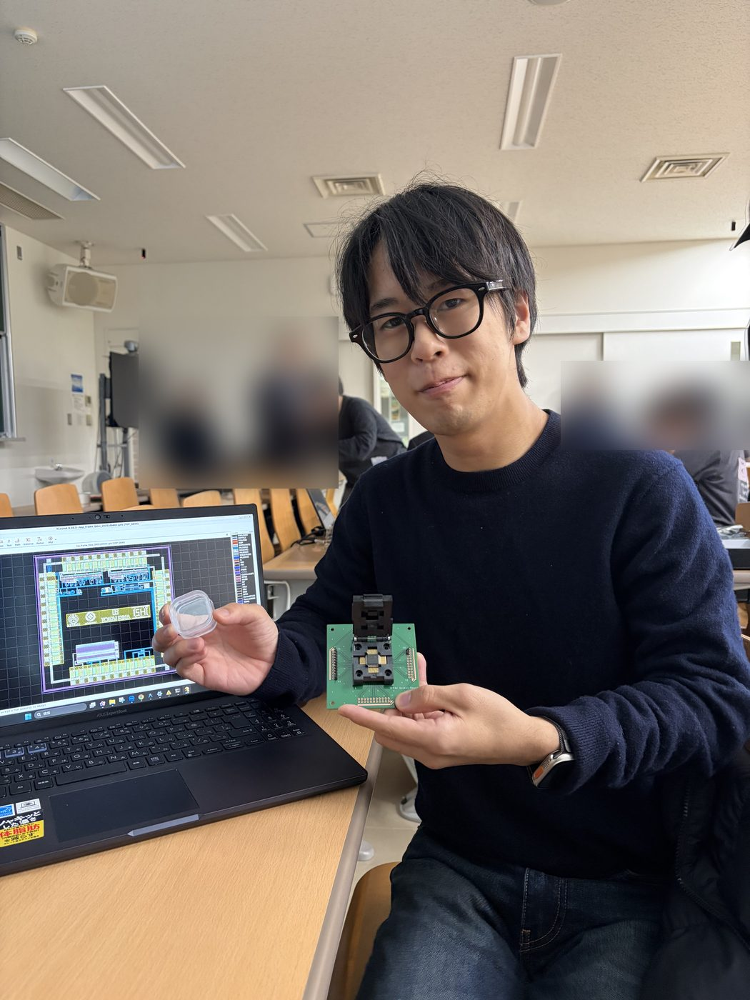
Semiconductors
半導体Semiconductors
チップを設計し、そのチップの試作品を自分の手で測るところまで、学外のプログラムで体験してきました。
Through programs outside my university, I have designed a chip and tested the prototype with my own hands.
-
2025.09 – 2026.03
九州大学 価値創造型半導体人材育成センターのプログラムを3つ修了Completed three programs at the Kyushu University semiconductor talent center
高周波デバイス計測セミナーでは、回路をシミュレーションで設計し、はんだ付けで組み立てて評価しました。プロセス・デバイスシミュレーション実習のテーマは、TCAD を使ったトランジスタ（FinFET）の形の設計です。集積回路設計・評価ハンズオンセミナーでは、回路を設計し、約半年後に届いた試作チップ（1円玉より小さい）をブレッドボードにつないで、その動作を確かめました。
High-frequency device measurement: I designed a circuit in simulation, soldered it, and measured it. Process and device simulation: I designed the shape of a FinFET transistor with TCAD. IC design and evaluation: I designed a circuit, and about six months later I received the prototype chip (smaller than a 1-yen coin) and tested it on a breadboard.
-
2025.11
半導体設計ゲーム「THE GAME」（IBM 九州DXセンター）Semiconductor design game "THE GAME" (IBM Kyushu DX Center)
カードを使って、チームでロボット用のチップを予算と大きさを考えながら設計しました。小さなチップを組み合わせるチップレットの考え方を体験しました。
With cards, my team designed a chip for a robot while thinking about budget and size. I learned the idea of chiplets, where small chips are combined into one.
-
2026.04
在福岡米国領事館セミナー「日本の半導体ルネサンス」に参加Attended the U.S. Consulate Fukuoka seminar on Japan's semiconductor renaissance
-
2026.08
台湾 雲林科技大学 半導体サマーキャンプを修了Completed a semiconductor summer camp at National Yunlin University of Science and Technology, Taiwan
TSMC の博物館や ITRI（工業技術研究院）を見学し、Arduino の実習に取り組みました。
We visited the TSMC Museum of Innovation and ITRI, and worked on Arduino lessons.
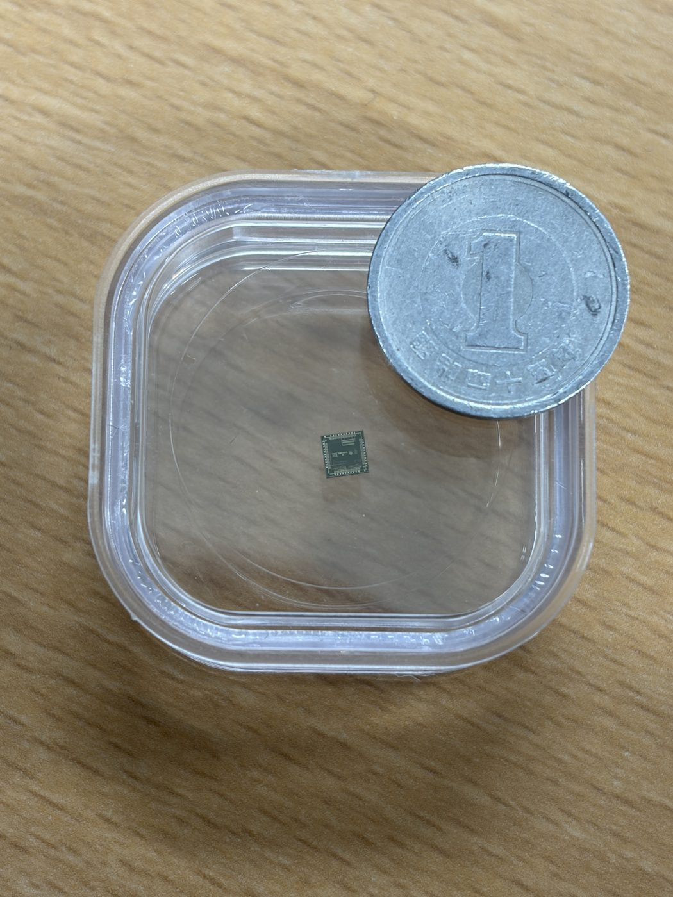
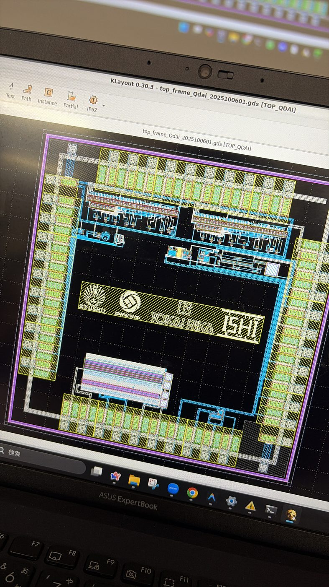
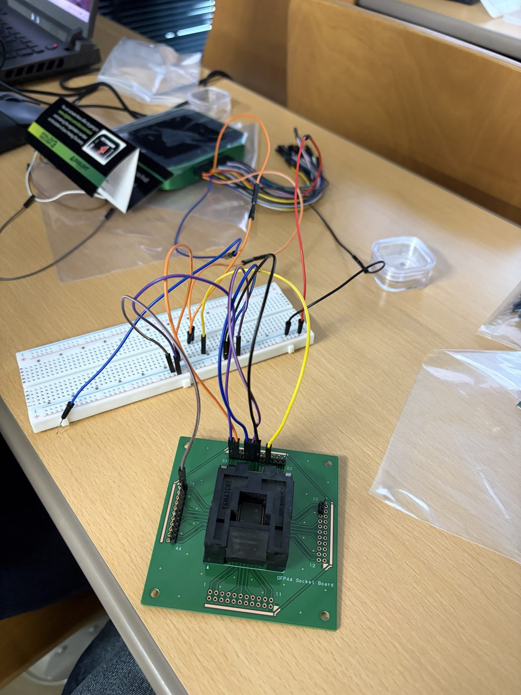
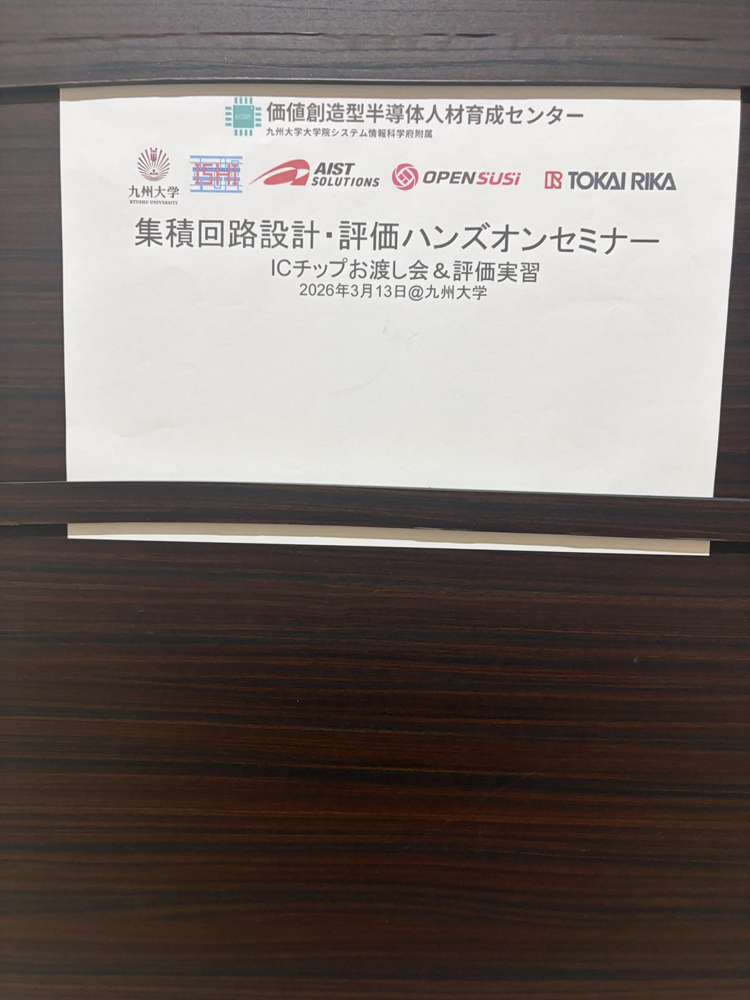
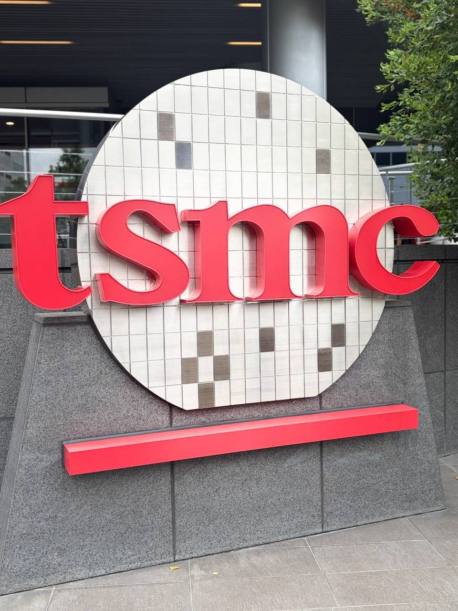
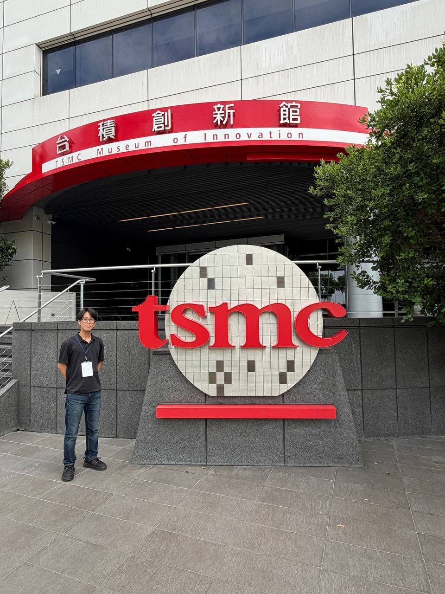
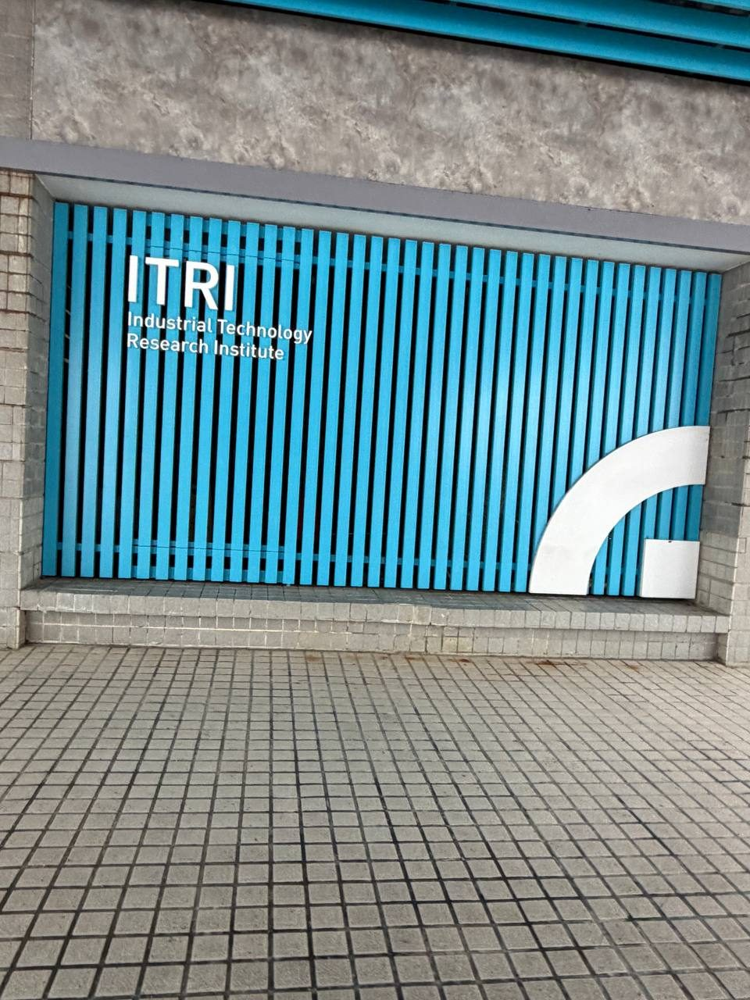
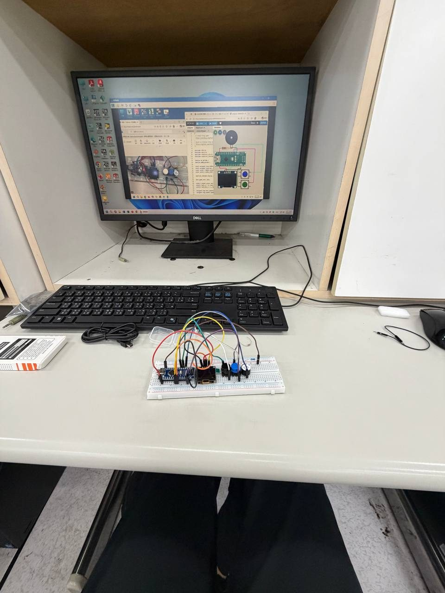
Global
海外での研修・交流Study abroad and international exchange
入学してから、タイ・シンガポール・台湾・韓国の研修に参加しました。台湾と韓国の PBL では、チームの成果を英語で発表しています。
Since entering university, I have joined programs in Thailand, Singapore, Taiwan, and Korea. In the PBL programs in Taiwan and Korea, I presented our team's results in English.
- 2025.06
タイ KMITL から来た研修生の受け入れHosting students from KMITL, Thailand
空港の出迎えや、湯布院・太宰府、北九州の視察に同行しました。
I joined the airport welcome and the field trips to Yufuin, Dazaifu, and Kitakyushu.
- 2025.08
台湾 亜洲大学の学生との交流会Exchange event with students from Asia University, Taiwan
- 2026.02
タイ KMITL 短期派遣研修（約2週間）Short-term program at KMITL, Thailand (about two weeks)
面接での選考と事前研修を経て参加し、帰国後の報告会で発表しました。
I was selected through an interview, took the pre-training, and presented at the report meeting after I came back.
- 2026.03
シンガポール SAIL ProgramSAIL Program, Singapore
フィリピン・セブの CPILS でオンライン留学を3週間受けたあと、テマセク・ポリテクニックで1週間学びました。事前課題では「福岡 NOW」を英語でグループ発表しました。
Three weeks of online English study with CPILS (Cebu, Philippines), then one week at Temasek Polytechnic. Before the trip, my group gave an English presentation, "Fukuoka NOW".
- 2026.08
台湾 国立宜蘭大学との国際 PBL「AI 電子鼻」International PBL with National Ilan University, Taiwan: "AI Electronic Nose"
ガスセンサで飲み物の香りを測り、そのデータを AI で分類しました。測定と記録の道具は自分で作り、最終発表は英語で行いました。
We measured the smell of drinks with gas sensors and classified the data with AI. I built the measurement and logging tools myself. The final presentation was in English.
- 2026.08
台湾 雲林科技大学 半導体サマーキャンプSemiconductor summer camp, Yunlin, Taiwan
「半導体」の節を見てください。
See the Semiconductors section.
- 2026.09
韓国 昌原国立大学の gPBLgPBL at Changwon National University, Korea
産業廃棄物から作った活性炭で蓄電デバイスを試作し、企業2社を訪問したうえで、その成果を英語で発表しました。
We made an energy storage device from activated carbon made from industrial waste, visited two companies, and presented the results in English.
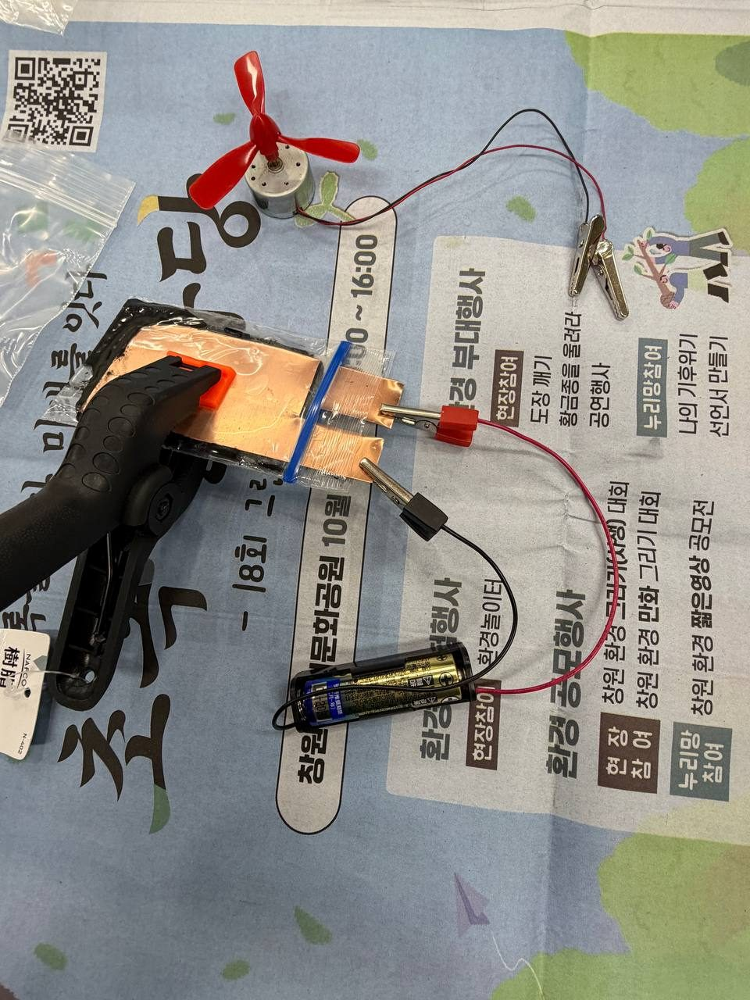
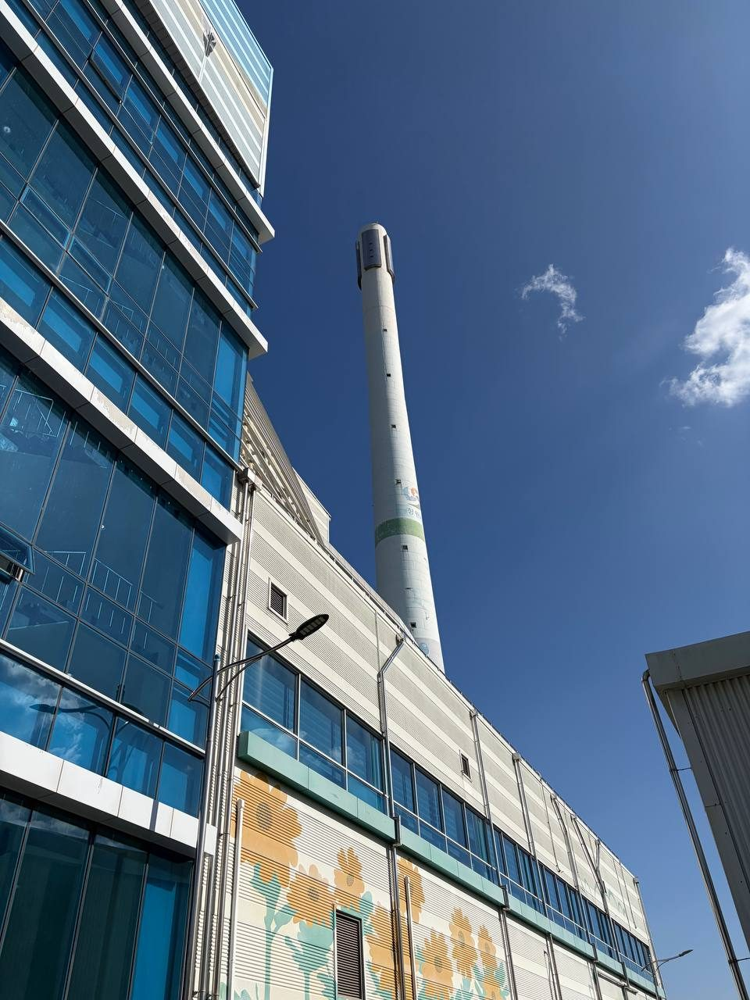
Things I built
作った物Things I built
自分の困りごとを、Claude Code と Python で道具にしています。作り方の一部は Zenn に記事として書いています。
I turn my own problems into tools with Claude Code and Python. I write about some of them on Zenn (in Japanese).
公開しているものOpen source
claude-code-skills
Claude Code のスキル24個と、スキルから呼ぶエージェント13体。実験レポート（Word）、編集できるスライド、議事録、ES、メールなどを、確認の質問から仕上げの検査まで同じ手順で作ります。
24 Claude Code skills and 13 agents, written in Japanese. They make lab reports (Word), editable slides, meeting notes, job applications, and emails with the same steps, from questions at the start to checks at the end.
Markdown, Python
技術記事 10本10 technical articles
授業動画から予習レポートを作る方法、自作スキルの作り方、AI にレポートを手伝わせても実験データを捏造させない決めごと、などを書いています。
Topics include making study notes from lecture videos, writing Claude Code skills, and rules to stop AI from inventing lab data.
自分の PC で動かしているもの（コードは非公開）Tools I run on my own PC (code not public)
壁紙の上の Google カレンダーGoogle Calendar on my desktop wallpaper
今週の予定を壁紙の上に出し、予定の10分前に「今やってる？」と聞きます。答えのボタンで、その予定を明日に回したり、時間をずらしたりできます。（記事）
It shows this week's schedule on the wallpaper and asks "Are you doing it now?" ten minutes before each event. With the buttons I can move the event to tomorrow or shift the time. (article)
画面の予定は見本ですThe events in the screenshots are samples.
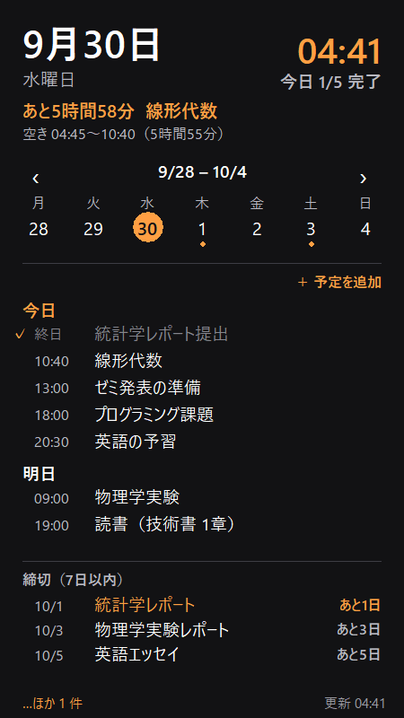
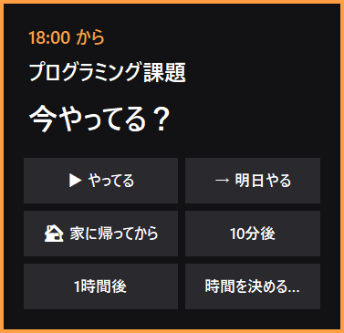
Telegram の双方向 botTwo-way Telegram bot
スマホのボタンで PC のファイル整理を承認したり、メモや質問を PC の Claude に送ったりします。
From my phone I approve file sorting on my PC and send notes and questions to Claude on my PC.
Python, Telegram Bot API, Claude Code CLI
Telegram から Claude Code を操作するブリッジTelegram bridge for Claude Code
VS Code で動いている Claude Code に外から指示を送り、Claude からの質問にもそこからボタンで答えます。
I send instructions to Claude Code running in VS Code while I am away, and answer its questions with buttons.
Python, Claude Code hooks
授業のリアルタイム文字起こしLive transcription for lectures
対面授業の音声を手元の PC で文字にし、3分ごとに専門用語の解説を挟みます。時間割を見て、授業中だけ動きます。
It turns lecture audio into text on my PC and adds short explanations of technical terms every three minutes. It runs only during class, based on my timetable.
Python, faster-whisper
タスクバーを歩くクロードくんA mascot walking on my taskbar
Claude Code の作業の様子を読んで動くマスコットです。集中タイマーと締切の旗が付いています。
A small mascot that moves based on what Claude Code is doing, with a focus timer and deadline flags.
Python (tkinter, Pillow)
チームや授業で作ったものTeam and class projects
Q-Trip（Q-Quest GROW 2025）
焼きなまし法で巡回セールスマン問題を解き、九州の旅行ルートを組む Web アプリです。量子コンピュータの人材育成プログラムの中で約半年かけて作り、2026年2月の DEMODAY で、このアプリで福岡市を回るシミュレーション動画を発表しました。
A web app that plans travel routes in Kyushu by solving the traveling salesman problem with simulated annealing. We built it over about six months in a quantum computing talent program and showed a simulation video of a trip around Fukuoka City at DEMODAY in February 2026.
Next.js, TypeScript
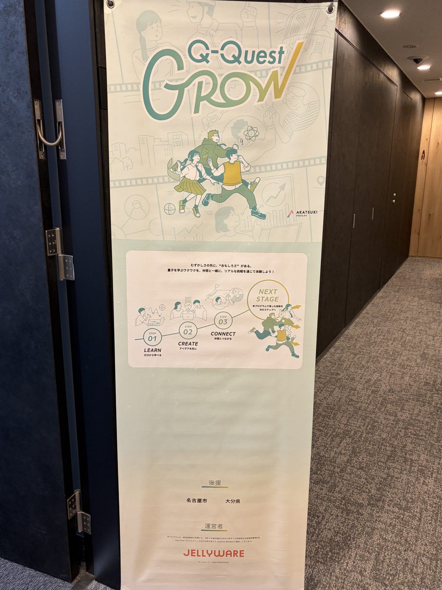
エンドレス シューティングゲーム（授業のチーム制作）Endless shooting game (class team project)
縦スクロールのシューティングゲームです。チームのリーダーとして、main の部分を書きました。
A vertical-scrolling shooting game. I was the team leader and wrote the main part.
C++, DxLib
AI 電子鼻の測定キット（台湾での国際 PBL）Measurement kit for the AI electronic nose (PBL in Taiwan)
ガスセンサの値を段階ごとに記録し、それをグラフにします。
It records gas sensor values step by step and draws graphs.
Arduino, Python
学習管理の Discord bot（個人。2026年6月に運用を終了）Study-management Discord bot (personal, ended in June 2026)
ポモドーロ、タスク管理、Google Calendar 連携、Claude API の応答を1つにまとめた bot です。
A bot with a Pomodoro timer, task management, Google Calendar, and Claude API replies.
Python, discord.py, SQLite
よく使う技術: Python, Claude Code ／ 授業やチームで使った技術: C / C++ (DxLib), TypeScript (Next.js), Arduino, Raspberry Pi ／ 半導体の実習: TCAD, KLayoutOften: Python, Claude Code / In class and teams: C / C++ (DxLib), TypeScript (Next.js), Arduino, Raspberry Pi / Semiconductor programs: TCAD, KLayout
Activities
学内外の活動Activities
大学の英語プログラムや学生の団体で受け持った役割です。
Roles I have taken in university programs and student groups.
- 2025.04 –
GCP（Global Challenge Program、学内の英語プログラム）GCP (Global Challenge Program, an English program at my university)
2025年12月のプロジェクト発表会で発表し、2026年6月に4期生に選ばれました。湯布院の学外研修ではプレゼンをしました。
I presented at the project presentation day in December 2025 and was selected for the 4th generation in June 2026. I gave a presentation at the off-campus training in Yufuin.
- 2025.09 – 2026.02
長期インターン（約6か月）Long-term internship (about six months)
- 2025.12
学内の英語スピーチコンテスト FIT TALKS 2025 に出場Speaker at FIT TALKS 2025, an English speech contest at my university
FIT TALKS 2026 は上級部門にエントリーしています。
I have entered the advanced division of FIT TALKS 2026.
- 2026.03
ピアサポーターPeer supporter
新入生オリエンテーションのスライドを作りました。
I made the slides for the new student orientation.
- 2026.09
工大サミット連携 PBL（広島）Joint PBL of technical universities (Hiroshima)
宮島の町家の使い方を班で考えて提案し、全体発表とポスター発表をしました。
My group proposed new uses for a traditional townhouse in Miyajima, and gave a presentation and a poster session.
- 2026
GSL（Global Student Leaders）リーダーLeader, GSL (Global Student Leaders)
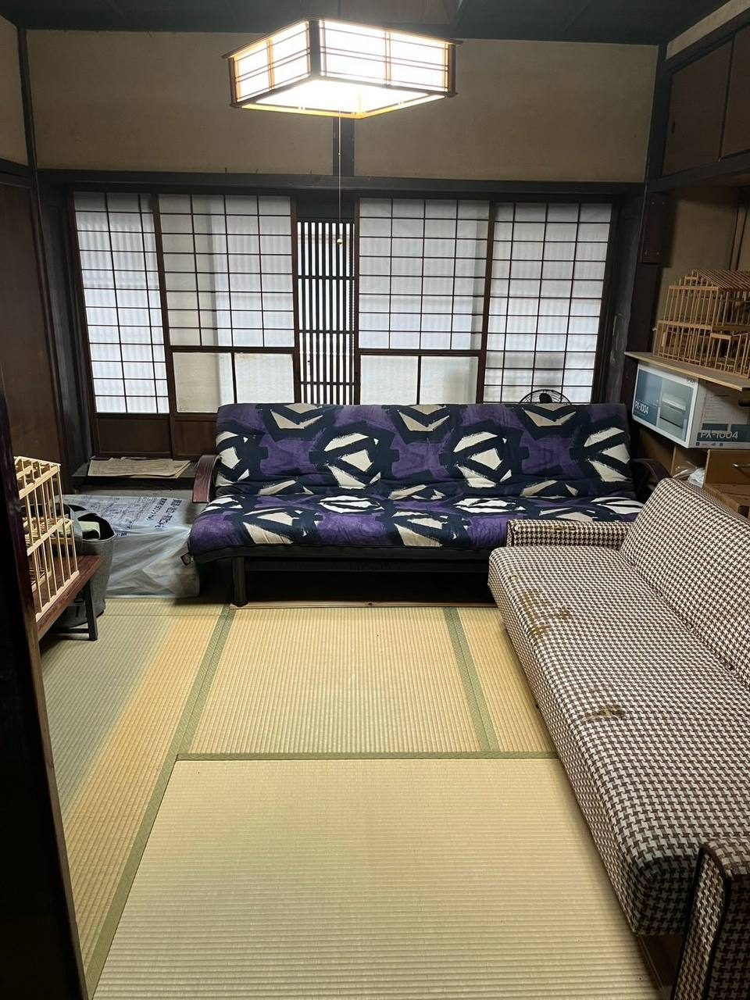
Timeline
年表Timeline
実際に参加した物だけを、古い順に並べています。
Only things I actually took part in, oldest first.
- 2025.04福岡工業大学に入学。GCP に参加Entered Fukuoka Institute of Technology. Joined GCP
- 2025.06タイ KMITL から来た研修生の受け入れHosted students from KMITL, Thailand
- 2025.08台湾 亜洲大学の学生との交流会Exchange event with Asia University, Taiwan
- 2025.09九州大学の高周波デバイス計測セミナー、プロセス・デバイスシミュレーション実習。集積回路設計・評価ハンズオンセミナーを開始。長期インターンを開始Kyushu University programs on high-frequency devices and device simulation. Started the IC design seminar and a long-term internship
- 2025.11半導体設計ゲーム「THE GAME」（IBM 九州DXセンター）"THE GAME" at IBM Kyushu DX Center
- 2025.12FIT TALKS 2025 に出場。GCP26 のプロジェクト発表会で発表Speaker at FIT TALKS 2025. Presented at the GCP project presentation day
- 2026.02タイ KMITL 短期派遣研修。Q-Quest GROW の DEMODAY で発表Short-term program at KMITL, Thailand. Presented at Q-Quest GROW DEMODAY
- 2026.03シンガポール SAIL Program。試作チップを受け取って測定。タイ研修の報告会で発表。新入生オリエンテーションのスライドを作成SAIL Program, Singapore. Received and tested my prototype chip. Presented at the Thailand program report meeting. Made slides for the new student orientation
- 2026.04在福岡米国領事館の半導体セミナーに参加U.S. Consulate Fukuoka semiconductor seminar
- 2026.06GCP 4期生に選ばれる。湯布院の学外研修でプレゼンSelected for the 4th generation of GCP. Presentation at the Yufuin training
- 2026.07授業のチーム制作でシューティングゲームを作る（リーダー）Made a shooting game as team leader in a class project
- 2026.08台湾 国立宜蘭大学との国際 PBL「AI 電子鼻」。雲林科技大学 半導体サマーキャンプInternational PBL "AI Electronic Nose" with National Ilan University. Semiconductor summer camp in Yunlin
- 2026.09工大サミット連携 PBL（広島）。韓国 昌原国立大学の gPBLJoint PBL in Hiroshima. gPBL at Changwon National University, Korea
- 2026.10FIT TALKS 2026 上級部門にエントリー。claude-code-skills を公開Entered FIT TALKS 2026 (advanced). Published claude-code-skills